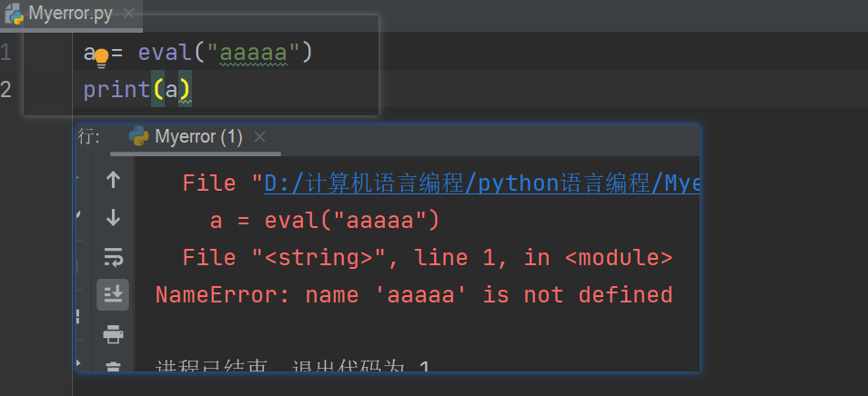
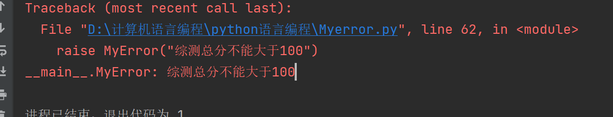
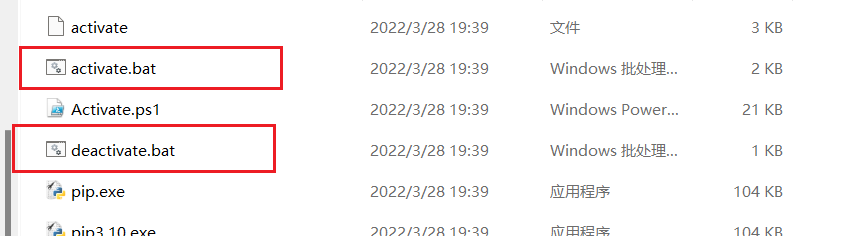

基础语法学习转菜鸟教程，这篇博客我只记录一些值得一提的知识点
读取命令行参数
解释器读取命令行参数，把脚本名与其他参数转化为字符串列表存到 sys 模块的 argv 变量里。
读取sys.argv即可读取命令行的输入
import sys
print(sys.argv[0])
print(sys.argv[1])
print(sys.argv)
注：除此外，还可以用sys.path得到内置模块路径
详情点这里
Python脚本首行特殊的注释声明
#!/usr/bin/env python3
# -*- coding: cp1252 -*-
上面代码示例中
第一行专用于类Unix系统，用于声明脚本运行时使用的解释器位置
若如此做，则可以直接以
./filename.py的形式执行 python 文件。也可以命令行指定python3 filename.py，命令行指定的优先级高于注释声明第二行不限系统，在不使用默认编码时声明文件的编码方式
注释声明可写可不写，并不是必要的选择
命令行交互执行Python时变量 “_”的作用
在命令行中，我们可以无需赋值给具体变量输入任意值
这是因为python会将这个值自动赋值给变量_ ， 如图
于是我们就可以这样写代码
很有趣的小知识
字符串处理
相邻字符串自动合并
多个字符串我们通常写成"a","b"的形式，而如果不加, 那么相邻的将会自动合并
a = "这是一个" "字符串"
b = ("拆为几行"
"很方便处理")
print(a,"\n",b)

序列类型的切片操作
Python支持对序列的切片操作，序列包括：字符串、列表、元组、集合
直接放代码
a = "abcdefg"
a[0:4] # 切片，前面为0或者后面为序列结束时可省略，如 [:4] [1:] [:]
a[-1:-4] # 也可以倒着切
a[2:-1] # 正数首位为0，负数首位为-1
eval函数的用途
打了一年CTF，一直把eval当能命令执行的危险函数用，最近遇到一个问题，才发现eval有些妙用
问：如何在命令行输入一个列表
input函数会自动将输入表成字符串，所以这里直接输是不行的，当然用list包裹也是不行的
而eval函数是将字符串转化为python可以理解的代码，它会按“就近原则”进行转化。可以理解为把字符串去掉两边的引号再丢编译器上
所以输入一个我们看到的”列表”字符串，经过eval后就是列表，元组、具体语句都是同理
这也是为什么eval中输入一串豪无意义的字符会报错的原因，因为把它“丢编译器上”本来就是错误的

注意：不要轻易使用eval，一句话木马，就是使用这个函数
不加约束的轻易使用等于给别人留后门
关于函数的传参
正常传参就是参数名，传入不限数量的参数，python使用*和**
def abc(a_name, *b_name, **c_name):
"""正常传参a_name，
一个*号获取所有位置参数，两个*号获取所有关键字参数
均以列表的形式
先一个*后两个*,注意顺序
"""
pass
Lambda 表达式
Lambda表达式生成匿名函数，语法lambda parameters_list : expression
# 相当于：
def <lambda>(parameters):
return expression
# 例如：
pairs = [(1, 'one'), (2, 'two'), (3, 'three'), (4, 'four')]
pairs.sort(key=lambda pair: pair[1])
print(pairs)
列表
用列表实现队列
堆栈简单，不提，主要python的队列比较特殊
python提供了一个库用于队列collections.deque,该库可以快速从两端添加或删除元素。
append(x) # 添加 x 到右端。
appendleft(x) # 添加 x 到左端。
extend() # 扩展deque的右侧，通过添加iterable参数中的元素。
extendleft() # 扩展deque的左侧，通过添加iterable参数中的元素。
pop() # 移去并且返回一个元素，deque 最右侧的那一个。
popleft() # 移去并且返回一个元素，deque 最左侧的那一个。
rotate() # 向右循环移动 n 步。 如果 n 是负数，就向左循环。
只是部分，不过其他的都和普通列表一致
列表推导式
Python允许通过迭代序列的方式来创建列表
类似于：
s = "abcdefg"
lists = [i for i in s]
print(lists)
如此做等价于
s = "abcdefg"
lists = []
for i in s:
lists.append(i)
print(lists)
极大的简化了代码。
同时列表推导式支持嵌套的操作，比如
s = "abcdefg"
a = "1234567"
lists = [[i,j] for i in s if i == "a" for j in a]
print(lists)
等价于
s = "abcdefg"
a = "1234567"
lists = []
for i in s:
if i=="a":
for j in a:
lists.append([i,j])
print(lists)
当然，如果不想被打，请不要把推导式写的过于复杂
注：如果需要对两个列表或者一个二维列表进行行列置换操作。请使用
zip()而不是列表推导式list_a = [1,2,3,4,5] list_b = ["a","b","c","d","e"] list_c = list(zip(list_a,list_b)) print(list_c) #或者 list_a = [ [1,2,3], [4,5,6], [7,8,9] ] list_b = list(zip(*list_a)) # *用法见关于函数的传参 print(list_b)
循环的技巧
循环字典时，可以用items()同时取出键和值
在序列中循环时，用 enumerate() 函数可以同时取出位置索引和对应的值
同时循环两个或多个序列时，用 zip() 函数可以将其内的元素一一匹配
使用 set() 去除序列中的重复元素。使用 sorted() 加 set() 则按排序后的顺序，循环遍历序列中的唯一元素
以上摘自官方文档，查看详情点这里
模块与包
模块中的 if __name__ == "__main__":用途
首先，当前作为脚本执行的py文件，__name__都是__main__,调用的模块都是模块名
import Myerror
print(__name__)
print(Myerror.__name__)
使用if __name__ == "__main__":的目的，实际上就是为了防止调用模块后被模块本身的语句影响，举个例子：
# Myerror
def a():
return 123
print(a()) # 这是被调用模块本身的执行语句
# 1.py
import Myerror
print(Myerror.a())
如图，函数a被输出了两次，这就对实际的项目产生了影响，所以将它改一下
# Myerror
def a():
return 123
if __name__ == "__main__":
print(a())
# 1.py
import Myerror
print(Myerror.a())
如此，使用if __name__ == "__main__"就区分了作为模块调用和作为脚本执行这两种情况，避免引起不必要的错误。
注：
if __name__ == "__main__"是书写python的好习惯，尽可能的去使用此语句而不是直接写为了快速加载模块，Python 把模块的编译版缓存在
__pycache__目录中，文件名为module.*version*.pyc例如：
__pycache__/spam.cpython-33.pyc
包
Python 只把含 __init__.py 文件的目录当成包。这样可以防止以 string 等通用名称命名的目录，无意中屏蔽出现在后方模块搜索路径中的有效模块。
__init__.py是python导入包时第一个调用的文件，内容可写可不写，如果写，则优先调用
import a.fun as f
# __init__.py
print("这是__init__.py")

同时，在__init__.py中，还可以指定允许调用的模块范围,使用__all__列表
# __init__.PY
__all__ = ["fun_b"]
# fun_b.py
def b():
return "fun_b"
# fun_a.py
def a():
return "fun_a"
# 1.py
from a.fun import *
如图，只显示fun_b，没有fun_a，所以发布包的新版本时，包的作者应更新此列表。
with语句
我们在打开文件时有两种方式
# 3、
a = open()
# 2、
with open() as a:
pass
当然我们也知道使用with语句的原因：防止没有关闭文件导致出错
with 语句用于对资源进行访问的场合，确保不管使用过程中是否发生异常都会执行必要的“清理”操作，释放资源，比如文件使用后自动关闭、线程中锁的自动获取和释放等。
语法：
with [函数] as 变量: """这里的函数并非随便一个函数都可以， 特指可以返回上下文管理器对象的函数， 简单理解：需要关掉的函数""" pass # 举例 def fun(): """函数fun返回经典open函数 此时函数a返回了上下文对象，可以使用with处理""" return open("1.txt",'r',encoding="UTF-8") with fun() as a: res = a.read() print(res)可以理解为 变量=函数 的变体
处理文件只是with的用法之一
深层原理可以看他的简书：点击进入
格式化字符串
python在字符串方面提供了较为多样的操作方法，官方给出的名称为格式规格迷你语言
简单说，就是对{}中字符的操作,以下是我加了注释的官方模块
format_spec ::= [[fill]align][sign][#][0][width][grouping_option][.precision][type]
"""format_spec是规格迷你语言的语法，可以理解为参数顺序，使用时要写在:后面，如{:.2f}"""
fill ::= <any character>
"""fill其实就是代表任意字符，但要和align连用"""
align ::= "<" | ">" | "=" | "^"
"""
align是字符的排序方式，效果看下图
左对齐： < --让执行的变量左对齐
右对齐： > --同样值变量
正负变号: = --强制在符号（如果有）之后数码之前放置填充，此对齐选项仅对数字类型有效。
居中: ^
"""
sign ::= "+" | "-" | " "
"""
sign只对数字有效
'+'：表示标志应该用于正数和负数。
'-'：表示标志应仅用于负数（这是默认行为）。
" ": 正数上使用前导空格，在负数上使用减号。
"""
# """'#' 选项可让“替代形式”被用于执行转换,比如0b11111会自动转十进制"""
0 """'0'选项配合#使用，可以将十进制转换成其他进制，如0x,0b,0o;和#都只对数字使用"""
width ::= digit+
"""设置字符串宽度"""
grouping_option ::= "_" | ","
"""设置数字的千位分隔符，可以是_或者, """
precision ::= digit+
"""
对浮点数就是精确的小数点位数
对字符就是要使用多少个来自字段内容的字符。
不能对整数使用
"""
type ::= "b" | "c" | "d" | "e" | "E" | "f" | "F" | "g" | "G" | "n" | "o" | "s" | "x" | "X" | "%"
"""表示数据类型"""
举例：
num = 11111
print("填充*,num左对齐，正数处理，长度10:", f"{num:*<+10}")
print("允许格式转化并转为16进制:", f"{num:#0x}")
print("设置总宽度10,千位分隔符为“,”,浮点型、保留4位小数", f"{num:10,.4f}")
格式化字符串可以使用f标识，也可以使用format()函数
strs = "这是格式化字符串"
print("使用f标识，右对齐长度10:", f"{strs:>10}")
print("使用format函数,填充*并居中:","{:*^10}".format(strs))
使用JSON保存数据
Python 支持JSON，具体用法如下
- dumps() —— 序列化一个对象，使用loads()反序列化
- dump() —— 序列化一个对象为text file 类型，使用load()反序列化
自定义异常
自定义异常也值得一记
首先，Python使用raise关键字主动抛出异常
所有异常都以直接或者间接的形式继承Exception类，自定义异常也不例外
自定义异常很简单，直接或者间接继承Exception，然后用__str__方法返回异常名即可
class MyError(Exception):
def __init__(self, value):
self.value = value
def __str__(self):
return self.value
raise MyError("综测总分不能大于100")

多重继承须知
参考文章：
Learn to Code for Free——Python super()
继承有两种方法，super和类名.方法名，这两种方法又区别，尤其是在多重继承和链继承时
super详解
super方法是在类继承中最常见的方法，用于调用父类的方法
他会返回一个代理对象，它会将方法调用委托给 type 的父类或兄弟类。
人话就是可以让子类调用父类的方法，原理是返回一个代理对象，子类使用父类方法时，这个对象把调用请求委托给父类或者兄弟类，达到调用基类方法的目的
语法
super(type[classname],self[objecy-or-type]).方法其中python2.x必须写
super(type[classname],self).方法,而python3可以简写为super().方法object-or-type 确定用于搜索的MRO【方法解析顺序】，一般是self。搜索会从 type 之后的类开始。
举例来说，如果 object-or-type 的
__mro__为D -> B -> C -> A -> object并且 type 的值为B，则super()将会搜索C -> A -> object。
super一共有五个内置方法和三个属性（继承自object的不算），但都不常用
之前我认为
super().__init__()是调用了super类的__init__方法，后来一想不是这样，应该是调用了父类的__init__方法才对
方法解析顺序——MRO
方法解析顺序，英文简写MRO
指在类继承【特别是多继承】时类中方法具体的解析顺序，使用super调用父类和直接使用父类名调用，这两者有区别
父类名调用
class A:
def __init__(self):
print("基类——A类执行")
class B(A):
def __init__(self):
print("B类开始执行")
A.__init__(self)
print("B类执行结束")
class C(A):
def __init__(self):
print("C类执行开始")
A.__init__(self)
print("C类执行结束")
class D(B, C):
def __init__(self):
print("==========")
B.__init__(self)
print("++++++++++++++")
C.__init__(self)
print("==========")
D()
如上，构建了一个菱形的继承关系，首先是直接父类名.方法名的调用
通过结果可以得知是一个线性的调用关系:D->B->A;D->C->A,直接了当，但是A类被调用了两次
super调用
class A:
def __init__(self):
print("基类——A类执行")
class B(A):
def __init__(self):
print("B类开始执行")
super().__init__()
print("B类执行结束")
class C(A):
def __init__(self):
print("C类执行开始")
super().__init__()
print("C类执行结束")
class D(B, C):
def __init__(self):
print("==========")
super(D, self).__init__()
print("==========")
D()

结果是D->B->C->A，A类被调用了一次，好似一个深度优先遍历，一个广度优先遍历
所以在有终点基类的菱形或者类菱形继承结构中，使用super可以防止终点基类重复调用
如图，这就是所谓的类菱形继承关系
但是，super并不万能，当继承结构变成
这种树形继承关系时，就会出现问题
class A:
def __init__(self):
print("基类——A类执行")
class B:
def __init__(self):
print("基类——B类执行")
class C(A):
def __init__(self):
print("C类执行开始")
super().__init__()
print("C类执行结束")
class D(B):
def __init__(self):
print("D类执行开始")
super().__init__()
print("D类执行结束")
class E(C, D):
def __init__(self):
print("==========")
super(E, self).__init__()
print("==========")
E()
结果是：
A、B两个基类只执行了B类，这显然是比重复继承更不能容忍的错误
所以这种树结构多继承，要使用父类名.方法名的方式
class E(C, D):
def __init__(self):
print("==========")
C.__init__(self)
print("++++++++++")
D.__init__(self)
print("==========")
此时A、B两个基类均被执行
总结
继承结构有唯一一个终点基类时，最好使用super().方法名调用
继承结构不止一个终点基类时，使用类名.方法名的形式调用
具体原理设计MRO，可以自己尝试，估计还涉及底层的数据结构，但我是挖不出来了
迭代器浅层原理
迭代器普遍的应用于for循环、遍历之中
运行时，会首先在容器对象上调用iter()函数，iter()返回一个定义了__next__()方法的迭代器对象。
此方法将逐一访问容器中的元素。 当元素用尽时，__next__() 将引发 StopIteration 异常来通知终止 for 循环。
上述是官方文档说的，我没调试出来，不过不难理解
可以使用 next() 内置函数来调用 __next__() 方法，所以可以自定义迭代器
我这样理解：
首先，无论是什么，只要可以遍历，就可以使用iter函数封装成一个迭代器对象
a = "abcdef" # 字符串可遍历 it = iter(a) # 封装成iter对象 print(type(it))得到的这个迭代器对象，可以调用
__next__()方法，逐一访问容器中的元素。a = "abcedf" it = iter(a) i = next(it) # 用next方法访问元素 while i: try: print(i) i = next(it) except StopIteration: # 报错时程序终止 break
自定义迭代器就可以这样写
class My_iter:
def __init__(self): # 有点像C语言里的结构体
self.data = [1, 2, 3]
self.index = len(self.data)
def __iter__(self):
return self # 返回一个iter对象
def __next__(self): # iter对象调用__next__方法
if self.index == 0:
raise StopIteration
else:
self.index -= 1
return self.data[self.index]
my_iter = My_iter()
for i in my_iter:
print(i)

怎么说呢，数据结构的既视感，应该可以用迭代器来写数据结构的东西
生成器运行的浅层原理
Python生成器是我花了功夫区学习的一个点
语法：
yield [ num ]
代码示范：
def foo():
print("开始")
while True:
res = yield 4
print("res:",res)
g = foo()
print(next(g))
print("*"*20)
print(g.send(7))
上面代码出自CSND的一个老哥，链接
浅显理解，可以认为 yield 就是return 。它和return一样，都会返回一个值
不同点，==return执行后函数结束，而yield执行后函数暂停==
使用了yield的函数我们叫做生成器
send()函数给生成器传入一个值，参数将成为当前 yield 表达式的结果
throw(type[, value[, traceback]]) 在生成器暂停的位置引发type类型的异常close() 在生成器函数暂停的位置引发GeneratorExit。
此时调试上面的代码，就可以知道yield到底做了什么
第一次到yield，执行正常，return 4 程序暂停
此时程序直接执行下一步
调用到send()函数，send给生成器传值，于是生成器从暂停的地方继续执行
注意：上一步先返回了4，没有给res赋值，所以程序继续执行后会先将7赋值给res ， 这才是对于程序而言的下一步
循环回yield 再次返回4，程序结束
Python多线程
具体参考Python官方文档之线程对象
继承threading模块的Thread类实现多线程
线程是什么这里不做解释，线程怎么用官方文档可以找到解释
翻译一下，想运行一个线程，先要调用start方法，然后python会自动调用run方法
所以写线程的方式很简单，继承Thread类，重写run方法，调用start启动
其他方法：
join()方法：阻塞线程is_alive()方法用于检查线程是否存活。name属性： 定义线程名
import threading
class Mythread(threading.Thread):
def __init__(self, name):
threading.Thread.__init__(self)
self.name = name
def run(self):
for i in range(100):
print("running",self.name)
M = Mythread("线程一")
N = Mythread("线程二")
M.start()
N.start()
不做类继承的线程创建
python不是java，创建线程自然不会局限于继承类来创建线程
不过具体的实现本质上还是继承类
官方文档这样说：
target 是用于
run()方法调用的可调用对象。默认是None，表示不需要调用任何方法。name 是线程名称。 在默认情况下，会以 “Thread-N“ 的形式构造唯一名称，或是”Thread-N (target)” 的形式，其中 “target” 为
target.__name__，如果指定了 target 参数的话。
翻译一下，通过传入target参数，可以做到调用run方法，达到创建线程的目的【实际上是通过target直接重写了run方法】
而当我们没有传入name时，会自动命名为Thread-N【继承类创建】或者Thread-N(target)【传入target创建】
import threading
def a():
print('running a\n')
thread = threading.Thread(target=a)
thread.start()
print(thread.name)
传入name属性就可以指定线程名
thread = threading.Thread(target=a, name="线程一")
thread.start()
print(thread.name)
更深层的内容建议查看官方文档
老生常谈的float精确度问题
float不准确是一个老生常谈的问题，关于具体原因，Python这样解释：
浮点数在计算机硬件中表示为以 2 为基数（二进制）的小数。
比如十进制0.125等于等于 1/10 + 2/100 + 5/1000 ，同理，二进制的小数0.001等于0/2 + 0/4 + 1/8
这两个小数具有相同的值，唯一真正的区别是第一个是以 10 为基数的小数表示法，第二个则是 2 为基数。
不幸的是，大多数的十进制小数都不能精确地表示为二进制小数。这导致在大多数情况下，你输入的十进制浮点数都只能近似地以二进制浮点数形式储存在计算机中。
举个例子，1/3用十进制表示永远得不到准确值，无论是0.333333还是0.333333333
二进制也一样，十进制的0.1永远不能表现为具体的二进制数，只能无限趋近
加上计算机运算必然先从10进制转二进制，导致float永远存在精度问题
print("{:.20f}".format(1/10))
turtle库绘图
参考文章
在不做定义的情况下，绘图起点位置x,y坐标的(0,0)点
海龟库内置大量方法，具体查看可用的 Turtle 和 Screen 方法概览
个人觉得海龟库的核心不是各种绘图方法，而是控制画笔和填充
控制画笔
turtle.pendown()画笔落下【画笔落下开始绘图】turtle.penup()画笔抬起【画笔抬起移动画笔不绘图】
填充
turtle.begin_fill()填充之前使用turtle.end_fill()填充之后使用
begin_fill和end_fill共同指定出一个填充区间，以便于python知道该填充哪里
使程序在绘图结束后不立即关闭
turtle.done()开始事件循环 - 调用 Tkinter 的 mainloop 函数,使程序不会在绘图后立即结束turtle.mainloop()同上
import turtle as t
t.pensize(5)
t.pendown()
t.color("red")
t.begin_fill()
t.circle(50)
t.end_fill()
t.penup()
t.done()
虚拟环境
python 安装时要配置两个环境，python.exe和Script 目录
python.exe时python的执行文件，而/Script目录存放第三方库和python工具，比如pip、pyinstaller等
在实际的项目中，不同项目可能会需要同一第三方库的不同版本，这样就会导致环境冲突
所以python提供了虚拟环境的功能，通过创建新环境分割项目环境，以达到让项目间环境隔离的目的
创建和启用
在3.3之前，python只能通过virtualenv的方式去创建环境
python2 -m pip install virtualenv virtualenv --no-site-packages myvenv[这是环境名] # --no-site-packages 不复制主环境中已有的包3.3后，python将环境内置，虚拟环境可以直接创建
python3 -m myvenv[这是环境名]
图中所示都是虚拟环境
Linux的创建方式查看参考文章
创建成功后的虚拟环境有两个.bat文件

activate是启用环境，deactivate是关闭环境
成功启用会有如上提示
原理非常简单，在我们启用时将venv的环境变量写到第一行，关闭时恢复
应用实例
虚拟环境最常见的应用实例体现在Pycharm中
在我们设置环境时，pycharm默认的创建虚拟环境
当然也可以用现有环境使用默认的环境
将python打包成可执行文件
命令行打包
各种打包工具的对比如下(来自文章Freezing Your Code)：
| Solution | Windows | Linux | OS X | Python 3 | License | One-file mode | Zipfile import | Eggs | pkg_resources support | Latest release date |
|---|---|---|---|---|---|---|---|---|---|---|
| bbFreeze | yes | yes | yes | no | MIT | no | yes | yes | yes | Jan 20, 2014 |
| py2exe | yes | no | no | yes | MIT | yes | yes | no | no | Oct 21, 2014 |
| pyInstaller | yes | yes | yes | yes | GPL | yes | no | yes | no | Jul 9, 2019 |
| cx_Freeze | yes | yes | yes | yes | PSF | no | yes | yes | no | Aug 29, 2019 |
| py2app | no | no | yes | yes | MIT | no | yes | yes | yes | Mar 25, 2019 |
这里我使用pyinstaller
windows和Linux的打包方式相同，但需要在对应的系统下进行打包
命令：
pyinstaller [参数] [文件路径]
| 参数 | 用法 |
|---|---|
| -F | 生成结果是一个 exe 文件，所有的第三方依赖、资源和代码均被打包进该 exe 内 |
| -D | 生成结果是一个目录，各种第三方依赖、资源和 exe 同时存储在该目录（默认） |
| -a | 不包含unicode支持 |
| -d | 执行生成的 exe 时，会输出一些log，有助于查错 |
| -w | 不显示命令行窗口 |
| -c | 显示命令行窗口（默认） |
| -p | 指定额外的 import 路径，类似于使用 python path |
| -i | 指定图标 |
| -v | 显示版本号 |
| -n | 生成的 .exe 的文件名 |
其中需要注意的是-F和-D
-F会将所有环境打包进一个文件中，-D会生成一个项目目录，执行文件和环境分离
默认-D
两个选项根据情况使用
无论那种方式打包后都会生成4个文件
其中 dist 文件夹就是打包完成的 exe 文件。
- .spec：纪录打包参数等等，可以想成安装预设档案，也可以用来打包，pyinstaller -F main.spec
- build：打包所产生的文件，不用理会
- __pycache__：python编译的模块文件夹，不用理会
图形窗口打包
pip install auto-py-to-exe -i https://pypi.tuna.tsinghua.edu.cn/simple/
python同样有图形化界面打包的方式

不做多讲
编译器按情况而论，比如pycharm貌似没有提供打包，而vscode可以用编译器打包
Python源码级查看
Python是根据C语言去实现的，所以用普通的方法去查看C级函数源码，得到的只是一个满是方法名加pass、return的基础架构
在python中，Python实现的函数直接Ctrl+鼠标左键即可查看，调试也可以直接进去
C级函数不行，查看C级函数源码，需要去cpython中找到对应的函数https://github.com/python/cpython

以这种方法，就可以知道具体的C级实现
C级代码调试
知道怎么查看C级源码只是一部分，我并不满足
所以学习了如何去调试C级Python源码
首先，无论是那种方式，gdb调试，或者VS一把梭，都需要下载cpython源码，下载方式就是去上面提到的github解压或者官网下载源码
VS调试
双击执行PCbuild目标下的get_externals.bat文件，下载一些依赖放在externals文件夹，至于为什么我就不清楚了，人家这么写，我又没找到这么做的理由
通过PCbuild目录下的pcbuild.sln直接用VS打开

找到python，右击生成
VS自动编译cpython,生成以下三个项目
- pythoncore Python核心，包括解释器和核心对象等
- python 一个简单的main入口
- _ctypes 基于libffi服务于ctypes模块
并且给我们一个python_d.exe
打开就可以运行了
因为python的内置函数在cpython中多是以函数名object.c进行的命名，所以可以用Ctrl + ,输入f 函数名object.c文件中打上断点
当然有些还是找不到，需要自己去查文件位置，比如print

然后调试，在命令行中使用函数即可
于是我们就可以开心的C级调试了
GDB工具C级调试
gdb是C的调试工具，常用于Linux系统的C级调试
不过我看了半天没弄明白用法，暂时也用不上，就先不管了
可以查看参考文章